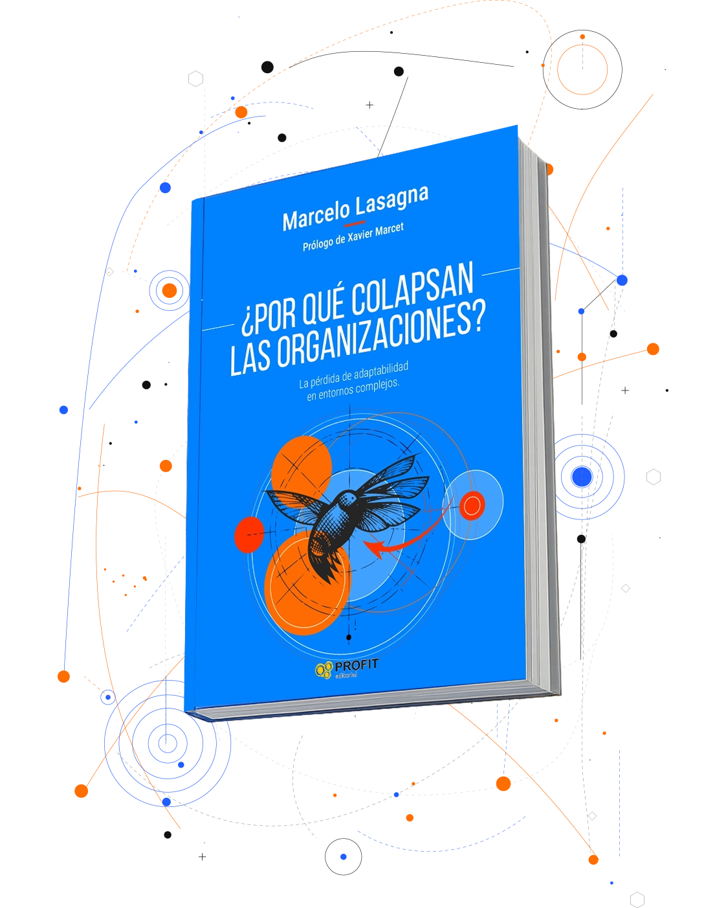
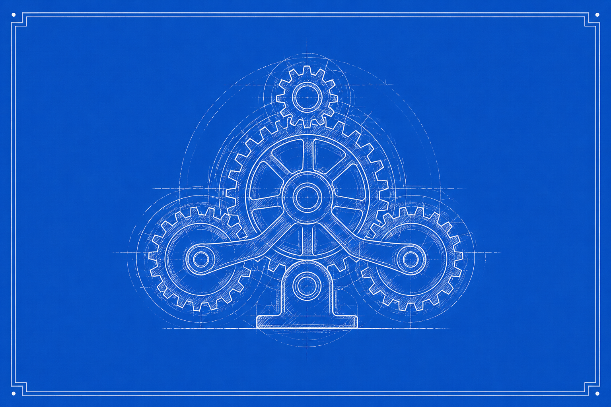
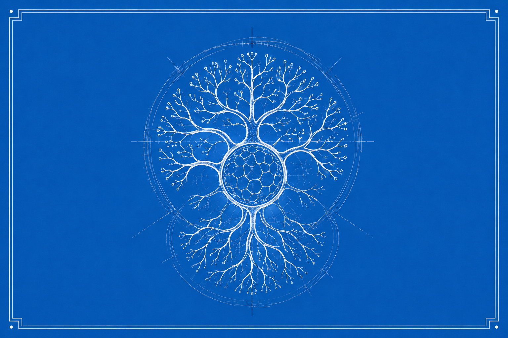

¿ESTÁS SEGURO QUE TU EMPRESA SEGUIRÁ VIGENTE?
La estabilidad es la muerte silenciosa.
¿Por qué las organizaciones colapsan, aunque todo parezca funcionar?
“Hay una complejidad que nos somete y hay una complejidad que nos inspira. Marcelo Lasagna hace que la complejidad sea inspiradora.”

Muchas organizaciones no colapsan por falta de estrategia.
Colapsan porque su capacidad de respuesta llega después que el cambio.
Detectan demasiado tarde los cambios
Las señales ya están en el entorno, pero la organización todavía lee la realidad desde indicadores del ciclo anterior.
Aprenden demasiado lento
El conocimiento existe, pero no logra convertirse a tiempo en decisión, coordinación ni transformación efectiva.
Coordinan mal la complejidad
Áreas, equipos y liderazgos operan como piezas aisladas frente a problemas interdependientes.
Siguen diseñadas para un mundo que ya no existe
Su arquitectura mental, organizacional y cultural responde a una estabilidad que dejó de ser el punto de partida.
Las organizaciones no son máquinas.
Son sistemas vivos que prosperan en la incertidumbre y la transformación permanente.

Controlar un sistema como si fuera estable.
La lógica mecanicista busca previsibilidad, repetición y eficiencia local. En entornos complejos, esa misma estabilidad puede transformarse en fragilidad.

Cultivar capacidades para evolucionar.
El libro propone abandonar la lógica de estabilidad y comprender cómo cultivar capacidades adaptativas para sostener vigencia en entornos complejos.
5 capacidades para evitar la obsolescencia
Anticipación, agilidad, aprendizaje, adecuación y antifragilidad ordenan el mapa para mantener vigencia.
CUATRO PERSPECTIVAS PARA CONVERTIRTE EN UNA ORGANIZACIÓN ADAPTATIVA
Un recorrido editorial por el colapso, el marco de la triarquía, los desafíos reales y el futuro de la adaptabilidad.
El colapso
¿Qué ha hecho que las empresas colapsen?: casos y evidencia.
La triarquía
Sin complejidad, estancamiento. Sin adaptabilidad, el cambio desborda. Sin innovación, lo de siempre ya no sirve.
Los desafíos
Los 8 retos de las organizaciones de hoy. Un lenguaje común para los nuevos tiempos: glosario aforístico.
El futuro
Las 8 acciones que las organizaciones no pueden dejar de hacer.
Encuentros para conversar sobre lo que ya cambió.
Barcelona
Casa del Libro · Passeig de Gràcia 62 · 2 de julio · 19:00
Una conversación exclusiva sobre complejidad, adaptabilidad y vigencia organizacional.
Reservar plazaMadrid
Fecha por confirmar
Un encuentro para equipos directivos que quieren anticipar el cambio real.
PróximamenteSantiago de Chile
Fecha por confirmar
Presentación diseñada para empresas e instituciones en América Latina.
PróximamenteMarcelo Lasagna
PhD (c) en Ciencias Políticas.
Fundador de Protea Becoming Adaptive y cofundador de Lead To Change Chile.
Desde hace más de 30 años acompaña procesos de transformación e innovación en organizaciones públicas y privadas de Europa y América Latina.
Especialista en sistemas complejos adaptativos aplicados a organizaciones.
LinkedIn“La adaptabilidad no es una opción, es la única ventaja competitiva para habitar la complejidad.”
El libro propone una hipótesis, las organizaciones pierden vigencia cuando se vuelven incapaces de evolucionar al ritmo de su entorno.
Voces con autoridad
Tres testimonios que conectan el libro con la práctica, la academia y la institucionalidad.
“El libro de Marcelo Lasagna me ha hecho reflexionar sobre la necesidad de trabajar la complejidad y la adaptabilidad para asegurar la evolución y la supervivencia. Léanlo: les va a sorprender y van a encontrar respuestas a preguntas difíciles sobre el futuro de las organizaciones”
Óscar Hernández
Director de Asuntos Públicos, Comunicación y Sostenibilidad de Pascual
“Dirigir hoy no es controlar el futuro, sino crear las condiciones para habitar la incertidumbre. Un libro necesario para quienes dirigen organizaciones y quieran entender que el cambio es la única infraestructura que no caduc”
Jordi Marín
CEO UOC y ex CEO Catalunya Microsoft
“Marcelo nos brinda una nueva mirada para entender las organizaciones. Unas lentes que nos ayudan a explorar la riqueza de la complejidad, lejos de discursos catastrofistas. Una propuesta profunda y necesaria. Un nuevo mapa del tesoro para entender el mundo”
Meritxell Batet
Consejera de Ebro Foods y Satelio IOT. | Ex presidenta del Congreso de los Diputados de España.
El efecto Colibrí
Reflexiones sobre complejidad, adaptabilidad e innovación en tiempos inciertos.
Promover el libro, captar comunidad y abrir puertas a conferencias, labs e IAO.